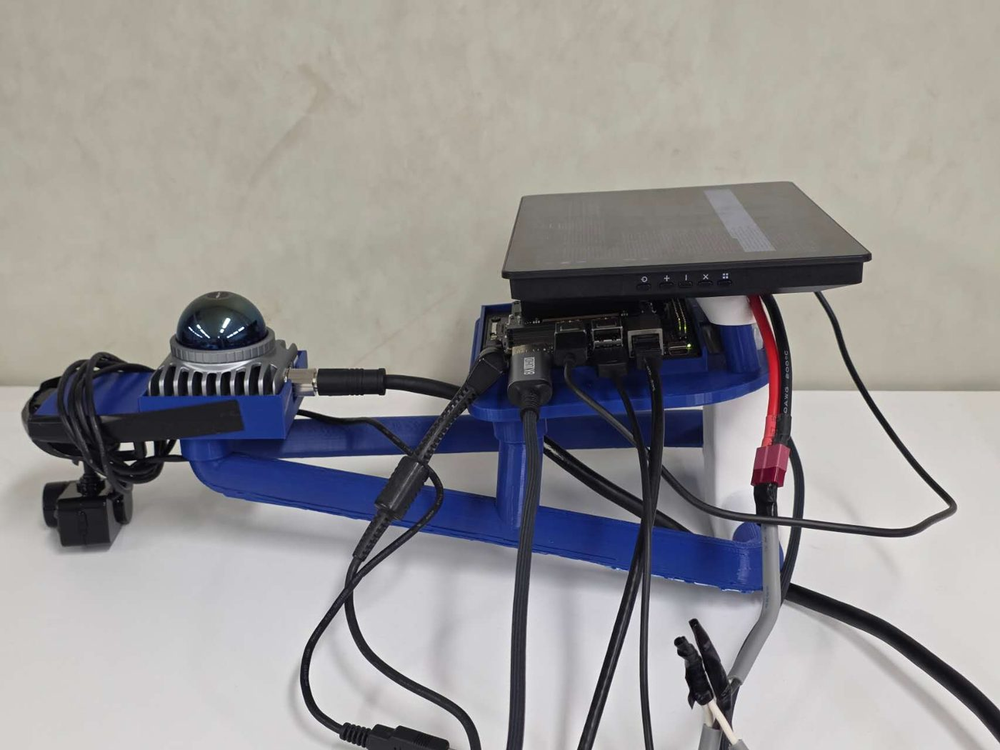
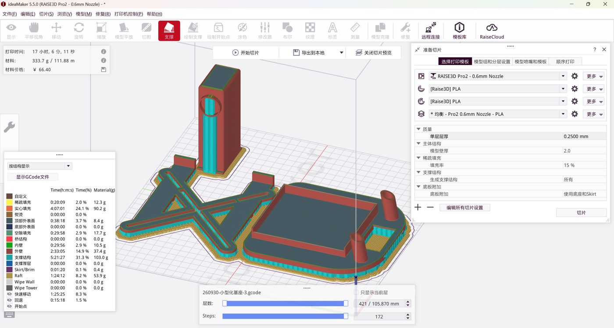
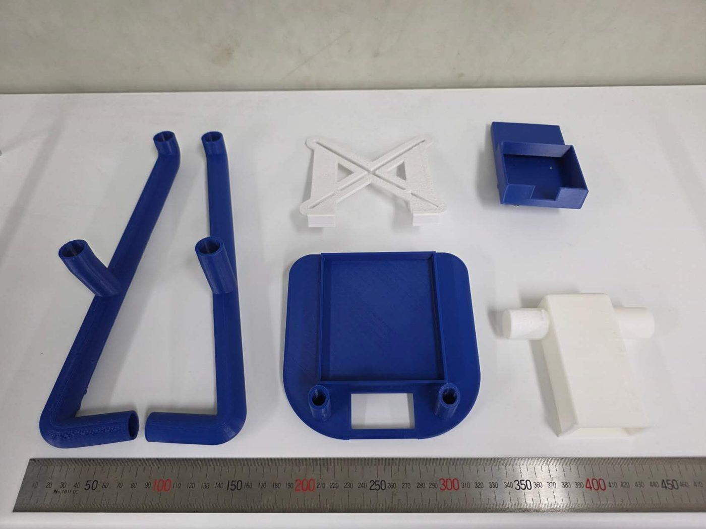
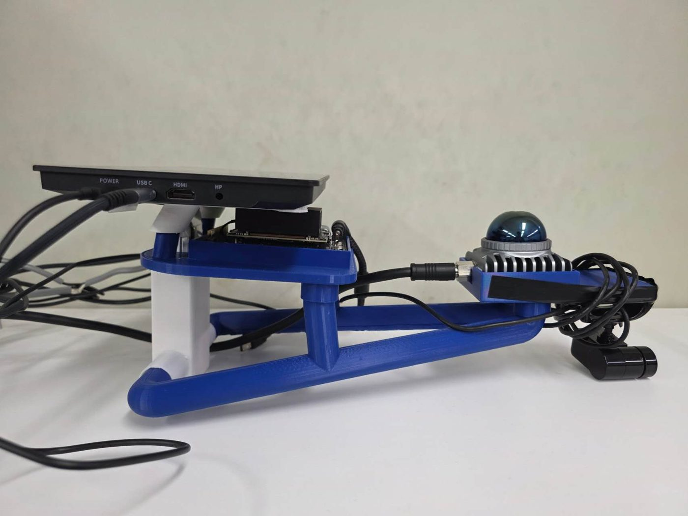
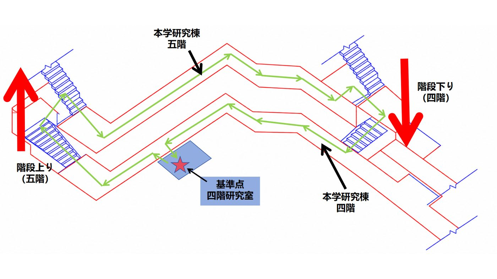
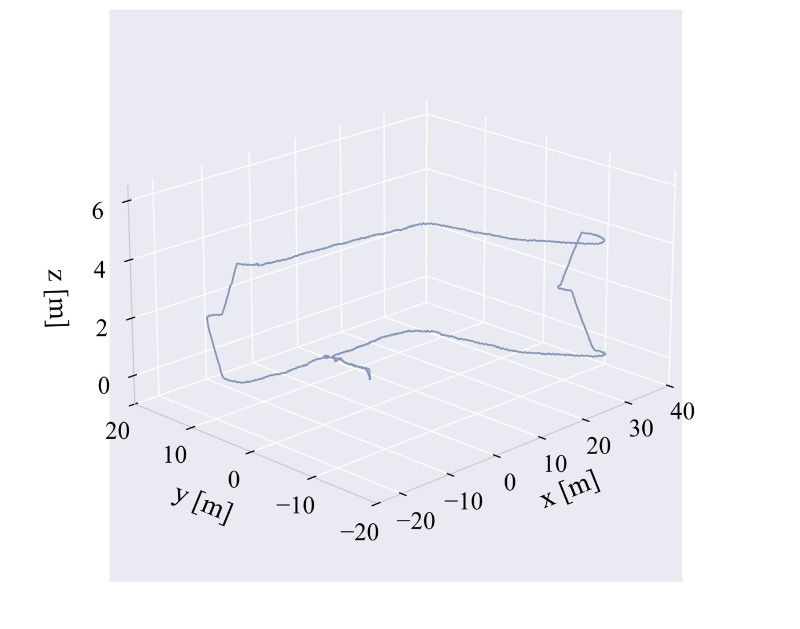
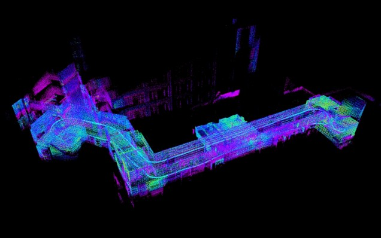
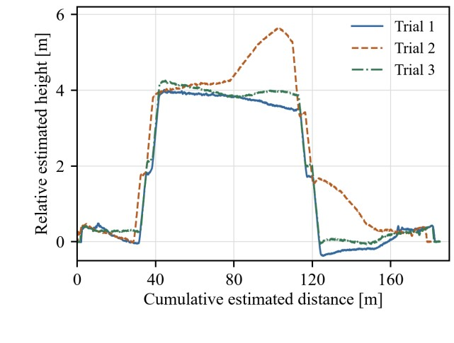

Ye Yuan · M.E. student · Nihon University · Kuroiwa Lab
Wearable LiDAR perception for people with visual impairments
I am turning a laptop-based LiDAR SLAM rig into a device a person can wear, one step at a time. Stage 1 made it small and self-contained. Stage 2, in progress, adds an obstacle alert.
cino25026@g.nihon-u.ac.jp

Handheld prototype, October 2026
Project starts from the lab's laptop-based LiDAR rig
First Point-LIO recordings with the MID-360
Raspberry Pi over Wi-Fi stalls; processing moves to a Jetson
Loop tests show a 1.7 m height drift; traced to one sensor
Sensor restored with a Livox SDK2 factory reset
Fixtures redesigned in Fusion
Final base printed and assembled
Three floor-to-floor loop tests
Conference paper submitted
Obstacle alert software
Stage 1 · completed
A smaller, self-contained device
04/2026 – 10/2026
The earlier rig ran SLAM on a laptop. I first tried a Raspberry Pi that streamed data over Wi-Fi, but the link was not reliable, so I moved all processing onto an on-board Jetson Orin Nano. I designed the fixtures in Autodesk Fusion, printed them in PLA, and ran Point-LIO on ROS 1 with the Livox MID-360 and its built-in IMU.
Mass, with display
3,658 → 1,314 g−64.1%
Mass, no display
882 g−75.9%
Loop tests
3 × ~180 m4F → 5F → 4F, by stairs
Return to start
1.18–1.69 cmunder 0.01% of path length
Fig. 1Fixture assembly modeled in Autodesk Fusion.

Fig. 2Slicer preview before printing one part in PLA.

Fig. 3Printed parts before assembly, with a ruler for scale (mm).

Fig. 4Assembled device: LiDAR at the front, Jetson and display at the back.Video 1Screen recording from a corridor and stairs test on 07/31/2026, sped up 14×. Left: camera view. Right: the map Point-LIO builds while walking.

Fig. 5Test route: start at the 4th-floor lab (star), climb to the 5th floor, walk the corridor, and come back down to the same start mark.

Fig. 6Trajectory estimated by Point-LIO in trial 3 (m). The step in z is the stair climb.

Fig. 7Point-cloud map from the same trial. The corridors on both floors and the stairs between them are visible.

Fig. 8Estimated height over distance in all three trials. Each run climbs one floor and comes back to the start height.
The return-to-start figure compares the mean position over the first and last five seconds of each run. It includes the error of placing the device back on the start mark, so it is a loop-closure check, not absolute accuracy. The results are in a paper submitted to the annual research conference of the College of Industrial Technology, Nihon University (October 2026, in Japanese). In July, before these tests, I traced a repeatable 1.7 m vertical drift to one sensor by swapping in a second MID-360, and restored that unit with a Livox SDK2 factory reset.
Stage 2 · in progress
An obstacle alert for a chest-worn device
10/2026 – now
The goal is a device worn on the chest that warns the user when something gets close. The motor is not connected yet; so far the work is on the point-cloud side.
Check what a chest mount can see
The MID-360 sees about 7° down and 52° up. Worn upright on the chest, low obstacles near the feet can fall outside its view, so the mount angle matters.
Read the raw point cloud on the Jetson
A ROS 1 node takes about 20,000 points per frame at 10 Hz straight from the LiDAR driver. On the first real test the nearest obstacle was always 0 m: 40.79% of the points were zero coordinates.
Ignore the device's own parts
The mount and cables sit right next to the sensor and kept the alert on. Points within 50 cm that stay still for 10 seconds are ignored. Anything new or moving still triggers the alert. A neighbor check removes isolated returns.
Turn distance into alert strength
The nearest remaining distance maps to a strength from 0 to 100%: 0% beyond 2 m, 50% at 1 m, 100% within 0.5 m. A small window shows the value live.
Next: connect a vibration motor, test with boxes at measured distances, then try it on the body with someone walking alongside.